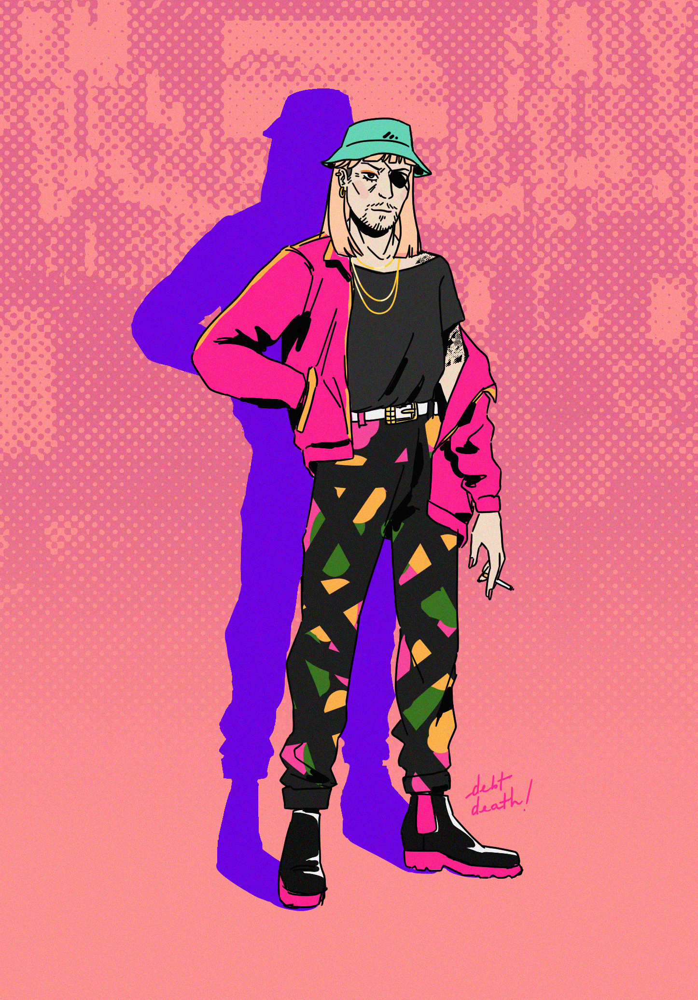
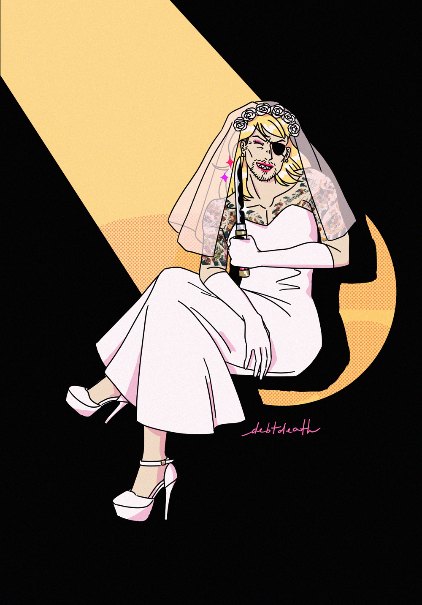

RGG gallery
You can tell here who my fav characters are... I really want to draw more Yakuza characters but I haven't had the time lately! I will get around to it though and will be updating this gallery accordingly as I go :)
2023
2022

